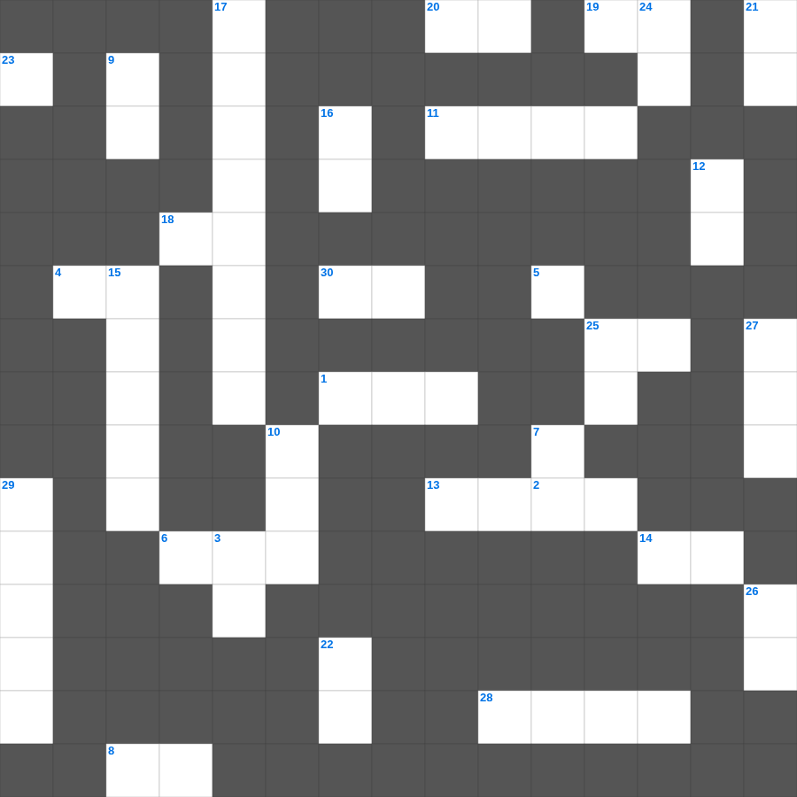

느헤미야 마스터 100 (2/2)
📌 서비스 정의
십자가로세로는 교회 주보와 주일학교에서 사용할 수 있는 성경 기반 가로세로 퍼즐 서비스입니다. 성경 인물, 사건, 핵심 구절을 바탕으로 제작되었습니다. 온라인 풀이 및 인쇄 기능을 제공합니다.
📖 느헤미야란?
느헤미야는 페르시아 왕의 신임을 받은 느헤미야가 예루살렘으로 돌아가 무너진 성벽을 재건하고, 신앙 공동체의 질서를 회복하는 이야기를 담고 있습니다.
📚 느헤미야의 주요 사건·주제
느헤미야의 부르심 · 예루살렘 성벽 재건 · 반대 세력과의 대결 · 율법 책 낭독과 회개 · 사회 개혁과 안식일 회복
오늘은 느헤미야의 주요 내용을 담은 느헤미야 말씀 퀴즈를 준비했습니다. 총 35개의 힌트가 있으며, 주일학교 교재나 성경공부 자료로 활용하기 좋습니다. 무료로 즐기는 느헤미야 가로세로 퍼즐을 지금 바로 풀어보세요!

📝 가로 힌트
1. 인내를 온전히 이루라 이는 너희로 온전하고 구비하여 조금도 이것이 없게 하려 함이라
2. 멜리데 섬 사람들이 바울이 독사에 물리고도 죽지 않자 그를 누구라고 생각했나
4. 맹인에게 실로암 못에 가서 씻으라 하셨을 때 그는 눈을 뜨고 어떤 상태로 돌아왔나
5. 요한이서 1장 5절: 우리가 서로 사랑하자 이는 이것 계명이 아니요 처음부터 가진 것이라
6. 마음이 청결한 자는 복이 있나니 그들이 이것을 볼 것임이요
6. 백부장과 예수를 지키던 자들이 이 일들을 보고 심히 두려워하여 이르되 이는 진실로 이것의 아들이었도다
8. 요한삼서 1장 15절: 가이오에게 기원한 것
11. 떡 다섯 개와 물고기 두 마리로 오천 명을 먹이신 기적
13. 삼손이 마지막에 기둥을 무너뜨린 집
14. 수고하고 무거운 짐진 자들아 다 내게로 오라 내가 너희를 이것케 하리라
18. 주의 성도들의 이것은 여호와께서 보시기에 귀중한 것이로다
19. 안식 후 첫날 새벽에 막달라 마리아와 다른 마리아가 무덤에 갔을 때 주의 이것이 하늘로부터 내려와 돌을 굴려 내고
20. 제단을 쌓고 아침저녁으로 드린 것
25. 주의 사자가 빌립을 보내어 에티오피아 여왕 간다게의 국고를 맡은 이것에게 복음을 전하게 함
28. 나누어 주기를 좋아하며 이것 자가 되게 하라
30. 진리의 기둥과 터는 무엇인가
📝 세로 힌트
2. 십계명의 제1계명 '나 외에는 다른 이것들을 두지 말라'
3. 예수께서 산에서 내려오시니 한 이것 환자가 나아와 절하며 이르되
7. 야고보서 2장 19절: 네가 하나님은 한 분이신 줄을 믿느냐 잘하는도다 이것들도 믿고 떠느니라
9. 아들 디모데야 내가 네게 이 교훈으로써 명하노니 전에 너를 지도한 이것을 따라 그것으로 선한 싸움을 싸우며
10. 오직 우리에게 모든 것을 후히 주사 누리게 하시는 이것께 두며
10. 요한삼서 1장 11절: 선을 행하는 자는 누구에게 속하나
12. 요한삼서 1장 1절: 가이오를 무엇 안에서 사랑하나
15. 베드로후서 1장 2절: 하나님과 우리 주 예수를 앎으로 무엇이 많아지나
15. 내 아들아 그러므로 너는 그리스도 예수 안에 있는 이것 가운데서 강하고
16. 동방 박사들이 드린 세 가지 예물: 황금, 유향, 이것
17. 느헤미야가 제사장과 레위 사람들에게 정해준 것 '이것을 공급하는 일'
21. 들으라 부한 자들아 너희에게 임할 고난으로 말미암아 울고 이것하라
22. 요셉이 보디발의 아내 유혹을 물리치고 간 곳
23. 미련한 자는 자기의 이것을 다 드러내어도 지혜로운 자는 그것을 억제하느니라
24. 안식일이 사람을 위하여 있는 것이요 이것이 안식일을 위하여 있는 것이 아니니
25. 주께서 내 이것을 만드시고 나의 모태에서 나를 만드셨나이다
26. 의인의 길은 돋는 햇살 같아서 크게 빛나 한낮의 이것에 이르거니와
27. 남유다 역사상 가장 악한 왕 (히스기야의 아들)
29. 탕자가 집을 나갔다가 돌아온 이야기
🧩 이 퍼즐에서 배우는 내용
이 퍼즐은 느헤미야 마스터 100 (2/2)의 핵심 단어와 개념을 자연스럽게 복습할 수 있도록 구성되었습니다. 주일학교 수업이나 개인 성경공부에서 학습 내용을 점검하는 용도로 바로 활용할 수 있습니다.
🧑🏫 교회 교육 자료 활용
이 퍼즐은 주일학교 교재 추천 자료로 활용할 수 있고, 주일학교 주보에 넣기 좋은 분량으로 구성되어 있습니다. 수업용 주일학교 교안에 활동지로 붙이거나, 예배 후 복습용 주일학교 공과교재로 바로 사용할 수 있습니다.
🏷️ 키워드
느헤미야 말씀 퀴즈, 느헤미야, 십자가로세로, 성경퀴즈, 말씀퀴즈, 가로세로퍼즐, 주일학교 교재 추천, 주일학교 주보, 주일학교 교안, 주일학교 공과교재